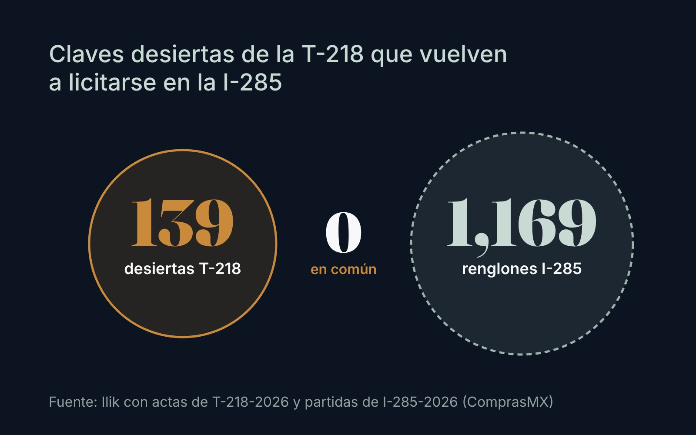

Observatorio / Compras públicas de medicamentos
Dato públicoNinguna de las 139 claves sin proveedor entró a la licitación abierta
La compra de genéricos del gobierno para 2027 y 2028 dejó 139 claves sin proveedor, y ninguna entró a la licitación abierta que vino después. Esa licitación tampoco se llenó: 496 de sus 1,169 claves quedaron desiertas.

En septiembre, el gobierno cerró su compra de genéricos, medicamentos oncológicos y antibióticos para 2027 y 2028. De 766 claves, 139 se quedaron sin proveedor. En 89, ninguna oferta cumplió los requisitos técnicos; en 30, ninguna pasó la revisión de precio, y 20 no recibieron ofertas.1
Después vino otra licitación, abierta a productos de cualquier país, incluidos India y China. La revisamos completa, clave por clave. Tiene 1,169 claves: casi todas son material de curación e insumos de laboratorio, y solo 78 son medicamentos. Ninguna de las 139 sin proveedor está en la lista.12
Esa licitación abierta ya tiene resultado, y también dejó un hueco grande. Según el acta del fallo, del 28 de octubre, 673 de sus 1,169 claves encontraron proveedor y 496 se quedaron sin él: más de cuatro de cada diez.3 La Secretaría de Salud había informado otra cuenta: 673 adjudicadas de 755.4 Por las cifras del acta, esa cuenta parece incluir solo las claves que llegaron a la revisión de precio, y deja fuera las que se cayeron antes, por no recibir ofertas o por no cumplir los requisitos técnicos.3
Que las 139 no estén en la licitación abierta no significa que el gobierno las haya olvidado. Salud anunció compras adicionales para lo que no se adjudicó, antes de que termine 2026, y Reforma reportó dos alternativas: asignarlas directamente a proveedores o que cada institución las compre por su cuenta.567 Cuál de esas vías se use para las 139 es lo que hay que seguir.
Para un hospital privado, esto tiene una lectura práctica. Entre las 139 hay soluciones para diálisis peritoneal, solución Hartmann, electrolitos, penicilinas e imipenem, productos de uso diario.1 Si el gobierno sale a comprarlos con prisa a principios de 2027, buscará a los mismos proveedores que surten a los hospitales privados. Conviene asegurar antes de diciembre el inventario del primer trimestre de esas claves.
Nota metodológica
Términos. Una clave es el código con el que el Compendio Nacional de Insumos para la Salud identifica cada producto. Una clave desierta es la que no se adjudicó a ningún proveedor. "Sin propuesta técnicamente solvente" significa que ninguna oferta cumplió las especificaciones técnicas; "evaluación económica", que ninguna ofreció un precio aceptable o conveniente en los términos de la Ley de Adquisiciones. La compra de genéricos es la licitación LA-12-NEF-012NEF001-T-218-2026, internacional bajo tratados comerciales; la licitación abierta es la LA-12-NEF-012NEF001-I-285-2026, internacional abierta. Ambas las convocó Birmex.
Cruce. Comparamos por clave la lista de desiertas del acta de fallo de la T-218 (sección V) con las 1,169 partidas de la I-285 publicadas en ComprasMX y consultadas el 27 de octubre de 2026. Las actas son documentos escaneados: las leímos con reconocimiento óptico de caracteres y revisamos contra la imagen los casos dudosos. Una clave que hubiera cambiado de código entre procedimientos no aparecería en el cruce. El misoprostol de 200 µg, desierto en envase de 12 tabletas, sí aparece en la I-285 en envase de 28 tabletas. El conteo de 78 medicamentos usa la partida presupuestal de cada renglón.
Resultado de la I-285. Tomado del acta de fallo del 28 de octubre de 2026, de 536 páginas: 1,169 claves; 84 sin ninguna propuesta; 496 declaradas desiertas en la lista numerada de la sección V; 673 adjudicadas, la misma cifra que informó la Secretaría de Salud. El acta no menciona 755 claves ni 82 pendientes. La diferencia entre 755 y 673 (82) es cercana a las claves que el acta declara desiertas en la evaluación económica, unas 81 según nuestra lectura; de ahí la inferencia del texto. Correcciones y comentarios: contacto@ilikanalytics.com.
Transparencia. Ricardo Rodríguez, fundador de Ilik, trabajó en Laboratorios PiSA hasta julio de 2026. Este análisis usa solo documentos públicos. Ilik ofrece servicios de inteligencia de compras a hospitales privados.
Fuentes
- Birmex. Acta de fallo de LA-12-NEF-012NEF001-T-218-2026, 25 de septiembre de 2026, publicada en ComprasMX. Ver en comprasmx.buengobierno.gob.mx ↩
- Birmex. Ficha y partidas de LA-12-NEF-012NEF001-I-285-2026, consultadas el 27 de octubre de 2026 en ComprasMX. Ver en comprasmx.buengobierno.gob.mx ↩
- Birmex. Acta de notificación de fallo de LA-12-NEF-012NEF001-I-285-2026, 28 de octubre de 2026, publicada en ComprasMX. Ver en comprasmx.buengobierno.gob.mx ↩
- SDP Noticias. "Salud y Birmex adjudican 997.6 millones de piezas de medicamentos para 2027-2028", 29 de octubre de 2026. Ver en sdpnoticias.com ↩
- N+. "Salud concluye compra consolidada de medicamentos para 2027-2028 por 84 mil mdp". Ver en nmas.com.mx ↩
- Expansión Política. Compra de medicamentos 2027/2028, 4 de octubre de 2026. Ver en politica.expansion.mx ↩
- Plano Informativo (Reforma). "Amarra Birmex megacompra; 82% de medicinas". Ver en planoinformativo.com ↩